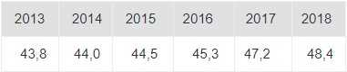

Добыча угля
С 2008 года компания «Кузбассразрезуголь» вышла на уровень добычи свыше 40 млн. тонн угля в год. На сегодняшний день объем угледобычи составляет в среднем 47-48 млн. тонн. Незначительные колебания по этому показателю зависят от стратегических планов Компании и от конъюнктуры на рынке угля. За 50 лет горняки УК «Кузбассразрезуголь» добыли 1 млрд. 600 млн. тонн угля.
Добыча угля\млн.тонн

За сутки горняки УК «Кузбассразрезуголь» добывают более 123 тысяч тонн угля. Добычу угля обеспечивает самая современная техника. Сегодня на разрезах работают БелАЗы грузоподъемностью до 360 тонн, экскаваторы с объемом ковша до 56 кубометров, мощные гидравлические буровые станки. Идет активное обновление и модернизация парка оборудования – за последние пять лет компания инвестировала в техническое перевооружение почти 53 млрд. рублей. С начала 2000-х годов горняки «Кузбассразрезугля» испытали на своих угольных полях и «дали добро» для серийного производства целого ряда горной техники современного поколения, в том числе и «первенцам» отечественного тяжелого машиностроения: экскаваторам ЭКГ-18, ЭКГ-18Р, ЭКГ-32Р и ЭКГ-35 - на Краснобродском разрезе. Текущая стратегия развития «Кузбассразрезугля» направлена на дальнейшее повышение качества и конкурентоспособности продукции и постепенный рост объемов добычи до 60 млн тонн угля к 2035 году.
Обогащение угля
Конкурентное преимущество имеет только тот производитель угля, который может предложить его наилучшие
товарные качества – главное правило Компании для эффективного развития.
Успешность внутри страны и на международном рынке достигается благодаря постоянному внедрению
новейших технологий добычи и переработки угля. УК «Кузбассразрезуголь» стремится поставлять не
просто сырье, а готовый высококачественный продукт, отвечающий запросам потребителей.
За последние 25 лет компания увеличила объем переработки и обогащения угля в 5 раз. С 2012 года в УК
«Кузбассразрезуголь» реализуется программа увеличения обогатительных мощностей, которая
предусматривает модернизацию действующих и строительство новых обогатительных фабрик и установок по
переработке угля. В результате с 2011 года объем переработки угля увеличился с 71 до 89% от общей
добычи.
Практически весь уголь перерабатывается и обогащается на фабриках и установках, оснащенных по
последнему слову прогресса. С начала XXI века компания запустила в эксплуатацию четыре современных
обогатительных фабрики, в дополнение к двум уже имеющимся в составе «Кузбассразрезугля». В ближайшей
перспективе компания планирует приступить к строительству следующей фабрики – ОФ «Талдинская
Энергетическая» – ей предстоит стать самой крупной в Кузбассе.
Продукция
УК «Кузбассразрезуголь» отрабатывает практически все месторождения Кузбасса с широким спектром марок
от Тощих до Длиннопламенных, с выпуском большого ассортимента рассортированного и обогащенного угля.
Уникальность углей (низкое содержание серы, мышьяка и хлора, отсутствие радиационного фона - это
подтверждается постоянным мониторингом) позволяют использовать продукцию Компании в разнообразных
областях промышленности.
Мы осознаем высокую ответственность перед своими потребителями и всегда стремимся к тому, чтобы
качество нашей продукции отвечало мировым стандартам. Поддержание уровня качества и его
совершенствование – одна из приоритетных задач в деятельности Компании.
Экология
Одна из стратегических задач развития Компании заключается в последовательной реализации
экологической политики, определении перспектив модернизации каждого предприятия, оценки и снижении
степени их воздействия на окружающую среду.
Нарушение природного ландшафта неизбежно при добыче полезных ископаемых. Поэтому один из
основополагающих принципов Компании – ведение производственной деятельности с минимальным ущербом
для окружающей среды и восстановление экологического равновесия на ответственной территории. На
протяжении многих лет Компания реализует программу рекультивации нарушенных горными работами земель,
строит современные очистные сооружения, принимает активное участие в массовых посадках деревьев как
на территориях предприятий, так и за их пределами..
На реализацию мероприятий по охране окружающей среды АО «УК «Кузбассразрезуголь» ежегодно выделяет
более 200 млн. рублей. В 2019 году Компания планирует направить на природоохранные мероприятия 412.1
млн. руб.
Биологическая рекультивация проводится из расчета - 3 тыс. саженцев на 1 гектар. Таким образом, за
последние 5 лет на разрезах Компании было высажено более 1 млн. новых деревьев. При этом Компания не
просто восстанавливает земли, а улучшает видовой состав леса: высаживается одна из самых ценных
хвойных пород – сосна.
Очистные сооружения (по состоянию на декабрь 2018 г.)
Действующие - 26
Строящиеся - 5
Проектируемые – 11
Система экологического менеджмента в УК «Кузбассразрезуголь» соответствует международным стандартам
ISO 14001:2015, что подтверждается соответствующим Сертификатом. Сертифицирующий орган: Ассоциация
по сертификации «Русский Регистр».
Безопасность производства
Эффективность производства в немалой степени зависит от уровня промышленной безопасности и охраны
труда (ПБ и ОТ) на предприятиях.
УК «Кузбассразрезуголь» стабильно сохраняет ежегодный объем инвестиций в обеспечение безопасных
условий труда – до 300 млн. рублей.
Средства направляются, прежде всего, на организацию превентивных мер:
- Страхование опасных промышленных объектов (ОПО).
- Обучение и повышение квалификации персонала.
- Внедрение современных IT-программ, позволяющих систематизировать и повысить эффективность производственного контроля.
- Оздоровление горняков, занятых на тяжелых работах и работах с опасными и вредными условиями труда.
- Обеспечение работников средствами индивидуальной защиты (СИЗ).
УК «Кузбассразрезуголь» является одним из признанных новаторов в сфере внедрения новых видов СИЗ. Так, Компания первой среди предприятий Кузбасса провела промышленные испытания и начала массово выдавать работникам поясничные пояса, что значительно снизило показатели временной нетрудоспособности по причине заболевания опорно-двигательного аппарата. Впоследствии поясничные пояса были введены государством в типовые нормы бесплатной выдачи СИЗ для работников угольной промышленности. Еще одна новинка, которую испытали в Компании, а затем приняли на вооружение на многих промпредприятиях, – самозатемняющаяся маска «Спидглас» для электрогазосварщиков.

Важная роль в обеспечении безопасных условий труда в Компании отводится профилактическим мероприятиям. В частности, с целью повышения профессионального уровня сотрудников ежегодно в Компании проводятся конкурсы профмастерства. На разрезах выбирают лучших водителей БелАЗов, машинистов экскаваторов и представителей других основных профессий отрасли. В 2013 году в «Кузбассразрезугле» прошел первый в России конкурс среди горных мастеров открытой угледобычи. В июле 2013 года УК «Кузбассразрезуголь» заключила первое Соглашение о сотрудничестве с Управлением Федеральной службы по контролю за оборотом наркотиков по Кемеровской области. Согласно документу, угольная компания и УФСКН обмениваются информацией о фактах немедицинского потребления наркотических средств работниками Компании и теми, кто трудоустраивается в компанию. Цель Соглашения - обеспечение безопасности ведения работ по добыче угля. Улучшение условий труда горняков обеспечивается и при освоении инвестиций в модернизацию производства. На предприятия УК «Кузбассразрезуголь» ежегодно поступает новейшее горно-добывающее оборудование, отвечающее всем современным требованиям безопасности.